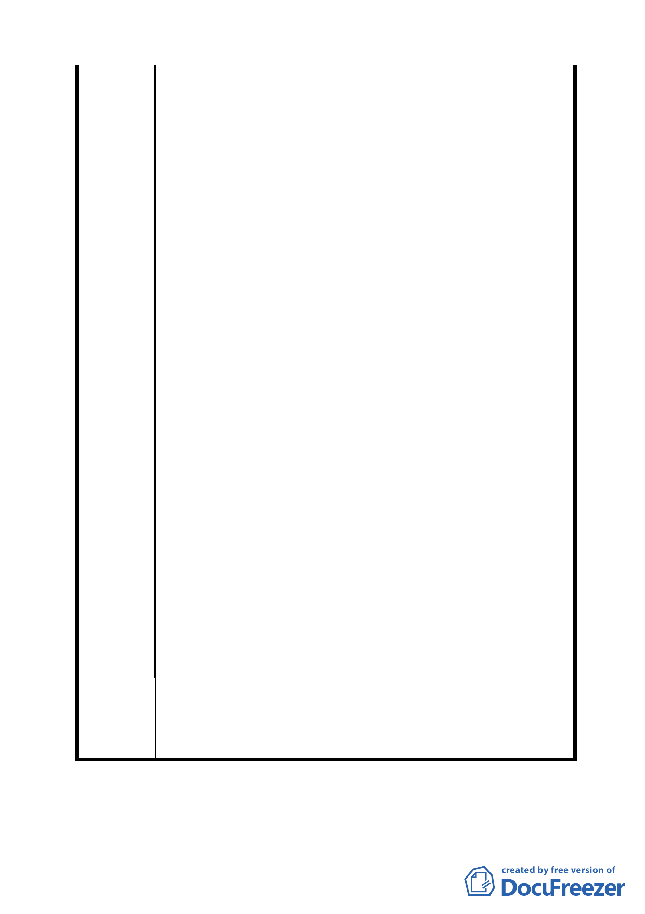

（2）里民住院病房優待。
（3）對本里年長者看病之優惠辦法。
（4）社區公園興建及維護（該公園權屬為新光醫院，政府
無法編列預算維護）。
5.里民停車之優惠辦法。
6.回饋里民公共建設經費。
8. 本計畫公園預定地部分，係臺北市都市計畫委員會通過，必
須留設綠地做為開放空間使用，做為住宅區與醫院緩衝地
帶。這就是都市計畫問題，並非回饋問題。正如新光醫院與
新光紡織在 93 年 2 月所提「北投、士林科技園區特定專用
區整體開發計畫書」所載，醫院與商業區有一綠帶區隔，做
為自然屏障，有異曲同工之妙。故此公園預定地，無論新光
醫院在此有無擴建計畫，或是在特定區面臨中正路及本計畫
南側地區部分，有無開發計畫，均不得撤銷此公園預定地之
編訂。而應該開闢為永久性之森林公園，並非如計畫書第
11 頁所載，由申請單位自行完成簡易綠化開放公眾使用，
來欺騙里民。
9. 正如本意見書第五點陳述，醫院擴建完成後，其每天進出人
口數約有 2 萬人次，其對停車的需求為何？停車需求內部化
之問題，均未提及；對交通衝擊問題，亦未考量，故應提出
交通影響評估及停車需求評估。
10. 計畫書附件五陳述：申請人擴建之醫療及商用設施，其規
模均未達「開發行為應實施環境影響評估細目及範圍認定標
準」之最小應辦面積標準（開發行為應實施環境影響評估細
目及範圍認定標準第 24 條第 5 款醫療建設之開發申請面積
5 公頃以上或擴建面積累積 5 公頃以上者），故應無辦理環
評之必要。為依據「北投、士林科技園區特定專用區整體開
發計畫書」其特定區範圍係在中正路以北、文昌路以西、美
崙街以南、以東及基河路所圍地區，面積共約 6.6425 公頃，
已超過 5 公頃，必須做環境影響評估。此計畫書是否有化整
為零，偷渡環評之嫌。
建議辦法
本細部計畫之提出，漏洞百出，計畫不完整違法及違反主要計
畫之處其多，建議予以退回，重新草擬計畫後，再予送審。
委員會
決議
同決議一。
討論事項四
案名：變更臺北市信義區祥和段 4 小段 205-8 地號土地機關用地
8